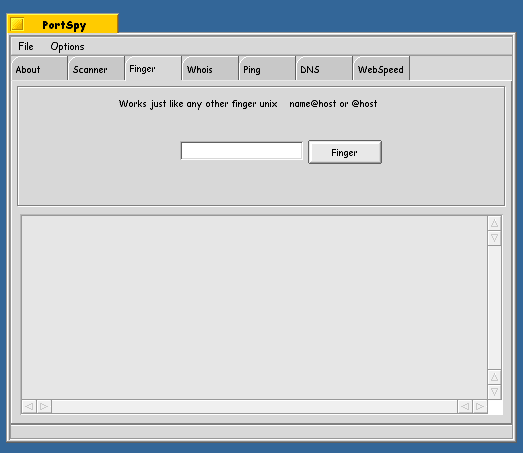
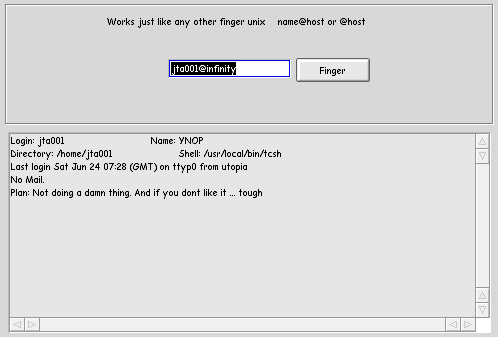

Finger tool is just your basic run of the mill unix finger tool. It lets you look up a user or search for a use on a system. Most unix systems now days have remote fingers turned OFF for security resons. (they don't want you knowing how is on the system or any info about them). Whoever for local use or for you local intranet it is verry usefull. Most active users have some sort of .plan or wity comments in there finger text.
Finger tool is just your basic run of the mill unix finger tool. It lets you look up a user or search for a use on a system. Most unix systems now days have remote fingers turned OFF for security resons. (they don't want you knowing how is on the system or any info about them). Whoever for local use or for you local intranet it is verry usefull. Most active users have some sort of .plan or wity comments in there finger text.

Its pritty basic. My login for infinity is jta001. Thus we do a jta001@infinity and hit 'Finger' and watch for nifty output

Thats it .. any questions?
Back to PortSpy docs
PortSpy is copyright YNOP Talton 1999,2000